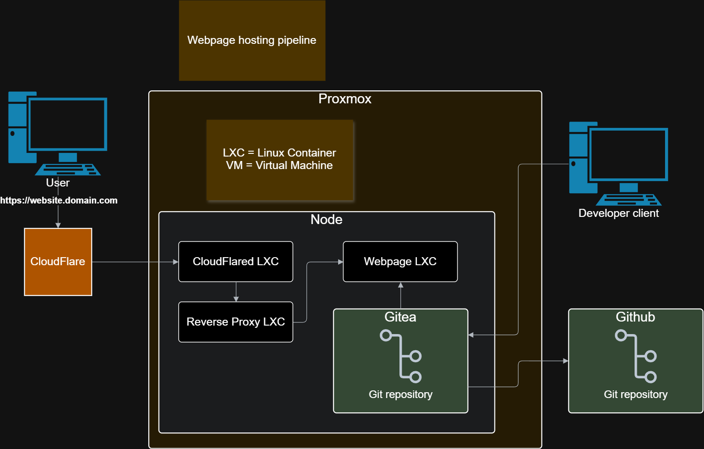

Website Development Pipeline
Development Objectives
The development of this website is guided by five core principles. Each technical and design decision aligns with at least one of these objectives:
- Clear User Experience
- Performance & Efficiency
- Scalability
- Code Quality & Maintainability
- Continuous Self-Improvement

Implementation Strategy
1. Clear User Experience
The website is structured around a deliberate and simplified user journey. Each page serves a defined purpose and contributes to a logical flow through the content.
The primary audience is likely recruiters, hiring managers, or individuals interested in reviewing my technical work.
Expected User Flow
Step 1 - Home Page
The user lands on the home page where they can quickly access:
- A concise CV overview
- Technical skills and experience
- External links (e.g., GitHub, LinkedIn)
From here, users can either explore external profiles or continue through the site by selecting the “View More Projects” option.
Step 2 - Projects Page
On the projects page, users can scan project summaries, review technologies used, and select individual projects for deeper technical insight.
This structure prioritizes clarity, minimal friction, and quick access to relevant information.
2. Performance & Efficiency
Performance is addressed through a lightweight and intentional approach:
- Minimal external dependencies
- Optimized asset sizes
- Structured and efficient CSS
- Logical file organization
- Reduced DOM complexity
The objective is fast load times, responsive interaction, and consistent behaviour across devices.
3. Scalability
The architecture of the site allows for growth without requiring major refactoring. This includes:
- Reusable layout patterns
- Modular styling
- Clear separation between structure and presentation
- Easy integration of additional projects or sections
4. Code Quality & Maintainability
Code quality is maintained through consistent standards:
- Clear naming conventions
- Consistent file structure
- Readable and self-documenting code
- Version control using Git
- Targeted comments where clarification is necessary
The goal is to ensure that the codebase remains understandable, adaptable, and maintainable over time.
5. Continuous Self-Improvement
This website is treated as an evolving project rather than a static portfolio. It serves as a space to apply new concepts, refine architectural decisions, and continuously improve implementation practices.
As my technical understanding develops, this site will reflect that growth through iterative improvements and refinements.